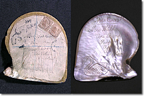
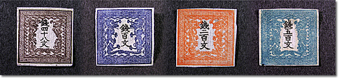
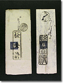
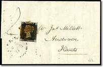
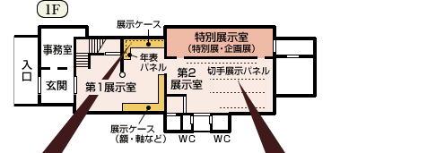
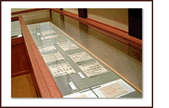
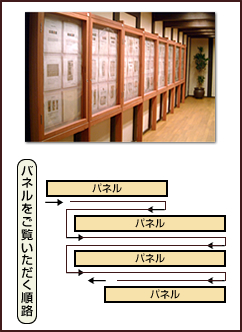

切手は小さな美術作品とも称えられ、日本はもとより世界各国の人々を魅了してやみません。
世界で初めて切手が発行されたのは1840年のイギリス。日本では1871年（明治４年）、新式郵便制度の制定とともに４種類の切手が発行されました。
当館は、この郵便創業時に発行され現在もっとも貴重なコレクションといわれる手彫切手を収蔵。さらに140年の間に発行された普通切手・記念切手を発行年代順・系統的に網羅した、日本初の本格的な切手の常設博物館です。
また館内には、明治時代に郵便配達夫が実際に使っていた肩掛箱や、駅逓寮で時を刻み続けた八角時計など、郵便作業に用いられていた品々や貴重な資料も多数展示。情緒にあふれた館内で、切手の魅力や収集の面白さ、郵便文化の奥深さをごゆっくりとお楽しみください。
オーストラリアで使用された真珠貝の書留カード。
今から約100年前に書留便として郵送されたものです。裏側の文面には掘り込まれたスワンが見られ、差出人のセンスの良さが伺えます。

明治４年３月１日に郵便が始まった時、日本で最初に発行された切手。
額面の単位が「文」で、竜の図が描かれているところから竜文切手と呼ばれるようになりました。
郵便創業時、駅逓司から切手の消印用として支給された「検査済」印。
写真左のものが東京〜熱田間で使用され、写真右のものが桑名〜大阪間で使用されました。
1840年に初めて郵便が開始されたのと同時に発行された切手を初日使用した封筒。切手の図柄は、ヴィクトリア女王で気品ある横顔が描かれています。
特別展示では、毎年４〜５回、特定のテーマに沿った切手や郵便資料の展示を行っています。日本の切手を年代順、種類別に展示する常設展示とは異なり、特定の年代や地域、消印のような切手を知る上で欠かせない郵便資料、あるいは切手の図案など、様々な角度から切手や郵便資料を取上げた展示を行っています。また、各地の切手収集家にもご協力いただき、ご自身のコレクションから選びぬいた作品を展示していただく切手展も開催しています。特別展示のご案内は定期的に更新しております。お見逃しのないよう、「特別展示のご案内」をご確認ください。
|  | |
|  |  |
| 2003年 国際切手展で日本切手コレクションが最高名誉賞「グランプリ・ド・ヌール」を受賞。 |